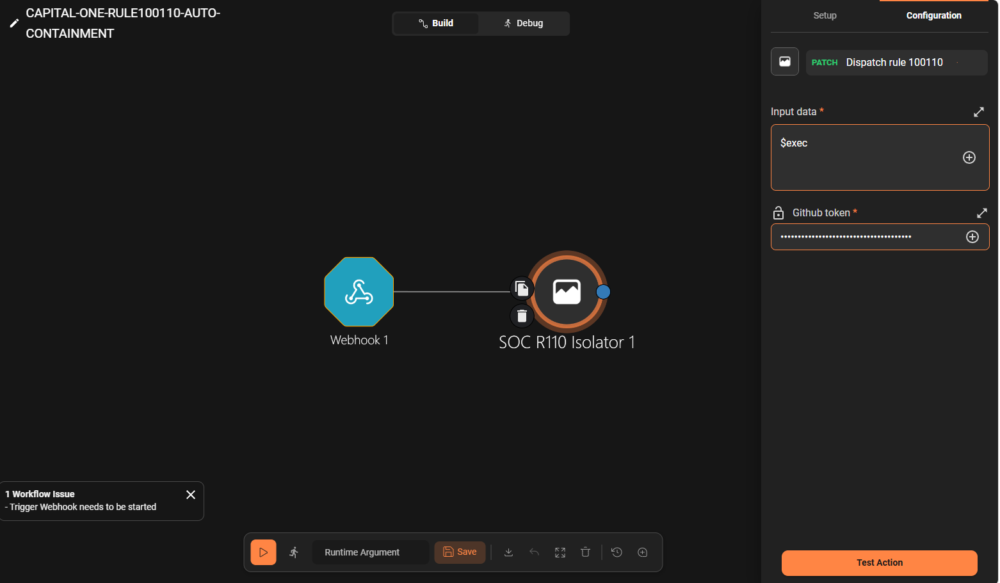

4. Capital One 시나리오 기반 연계 검증과 한계
Capital One 시나리오는 웹 애플리케이션 취약점을 통해 EC2 IMDS에 접근하고, 획득한 Node IAM Role 권한으로 S3 객체를 조회하는 흐름을 기반으로 한다.
본 프로젝트는 개인정보나 운영 데이터 대신 검증용 S3 객체를 사용하여 다음 과정을 검증하였다.
웹 공격 → IMDS 접근 탐지 → Workload 격리 → S3 접근 확인 → 웹 취약점 완화
임시 자격증명은 검증 과정에서만 사용하고 로그, Shuffle Payload 및 증적에는 저장하지 않는다.
4.1 전체 검증 흐름
| 순서 | 탐지·대응 단계 | 확인 내용 | 결과 |
|---|---|---|---|
| 1 | 웹 애플리케이션 공격 | DVWA 명령 실행 경로에서 IMDS 자격증명 엔드포인트 접근 | 감사 로그 생성 |
| 2 | 조기 탐지 | Wazuh Rule 100110이 자격증명 응답 반환 탐지 | Alert 확인 |
| 3 | 1차 대응 | Shuffle이 Alert와 Pod 이름·UID를 검증하고 격리 Workflow로 전달 | 코드·계약 검증 완료 |
| 4 | Workload 격리 | 대상 Pod의 Ingress·Egress를 차단하고 정상 Pod 유지 | Runtime 최종 검증 필요 |
| 5 | 침해확정 | CloudTrail에서 보호 S3 객체의 GetObject와 실제 바이트 반환 확인 | Rule 100111 Alert 확인 |
| 6 | 취약점 완화 | Shuffle이 DVWA 보안 수준을 low → impossible로 변경 | Runtime 실행 성공 |
| 7 | 배포·복구 | Argo CD로 변경사항을 배포하고 Reset Workflow로 low 복구 | Synced / Healthy 확인 |
Rule 100110과 100111은 독립적으로 발생한다. Wazuh Timeline에서 발생 시각, IAM Role 및 접근 대상을 함께 비교하여 동일 사건으로 조사할 수 있는 근거를 제공한다.
4.2 Rule별 탐지 기준
Rule 100110 — IMDS 접근 조기 탐지
Rule 100110은 DVWA 명령 실행을 통해 IMDS 자격증명 엔드포인트의 응답이 실제 반환된 경우 발생한다.
주요 조건은 다음과 같다.
명령문, IMDS 응답, Role 이름 및 자격증명 값은 기록하지 않는다. Alert에는 이벤트 시각, 결과, Pod 이름과 UID 등 대응에 필요한 안전한 필드만 포함한다.
Rule 100110은 자격증명 접근 성공을 나타내는 조기 경보이지만, S3 객체 접근까지 단독으로 증명하지는 않는다.
Rule 100111 — S3 접근 침해확정
Rule 100111은 CloudTrail S3 Data Event에서 다음 조건이 모두 확인될 때 발생한다.
단순 접근 시도나 AccessDenied가 아니라, 검증용 객체의 데이터가 실제 반환된 사건을 탐지한다.
[이미지 삽입 위치 — 탐지 증적]Rule
100110과 Rule100111이 시간순으로 표시된 Wazuh Timeline캡션: IMDS 자격증명 접근 조기 경보와 S3 객체 읽기 성공 경보의 단계별 확인
4.3 Shuffle 대응 연계
Shuffle은 Wazuh Alert를 그대로 실행하지 않고 Rule, 계정, 리전, 발생 시각, 이벤트 해시 및 고정 대상을 검증한다.
Alert가 임의의 Pod, Namespace, Repository, Branch 또는 명령을 지정하는 것은 허용하지 않는다.
| Rule | 대응 | 목적 |
|---|---|---|
100110 | 탐지된 DVWA Pod 네트워크 격리 | 추가 IMDS 접근과 내부 확산 제한 |
100111 | DVWA low → impossible GitOps 변경 | 동일 웹 공격 경로 재사용 방지 |
Rule 100110 대응
Rule 100110 검증을 통과하면 Pod 이름과 Kubernetes UID가 일치하는 DVWA Pod만 격리한다.
NetworkPolicy로 해당 Pod의 Ingress와 Egress를 차단하고, 정상 서비스를 위한 대체 Pod는 유지한다. 이는 S3 격리나 IAM 자격증명 폐기가 아니라, 침해된 웹 애플리케이션의 추가 활동을 제한하는 긴급 1차 대응이다.
현재 격리 코드와 입력 계약 테스트는 완료되었지만, 실제 Alert를 이용한 최종 Runtime 격리 증적은 추가로 확보해야 한다.
Rule 100111 대응
Rule 100111 검증을 통과하면 고정된 GitHub Workflow가 DVWA 보안 수준을 low에서 impossible로 변경한다.
변경사항은 Commit SHA로 기록되고 Argo CD를 통해 배포된다. 해당 자동 대응은 실제 Runtime에서 성공했으며, 시연 종료 후 Reset Workflow를 통해 다시 low 상태로 복구하였다.
Rule별 입력 검증과 고정 Workflow 분기가 확인되는 Shuffle 화면
캡션: 검증된 Wazuh Alert만 사전에 정의된 대응으로 전달하는 Shuffle 안전 게이트
- Wazuh Alert를 $exec 입력으로 수신하여 Rule별 고정 대응을 수행하도록 구성한 Shuffle Workflow
- Wazuh Alert는 Webhook을 통해 단일
SOC R110 IsolatorAction으로 전달된다. Action은 전체 입력값을 $exec로 받아 내부 계약에 따라 Rule100110과100111을 검증하고, 허용된 Rule만 사전에 고정된 GitHub Workflow로 전달한다.
{kind=link}

- (성공) Rule
100111입력 검증 후 고정된 GitHub Workflow로 대응을 전달한 Shuffle 실행 결과

- (해당 Rule이 없을 경우) 허용되지 않은 Rule ID 입력을 검증 단계에서 거부하여 후속 GitHub Workflow 실행을 차단한 Shuffle 음성 테스트 결과


Rule100111GitHub Actions 성공과 Argo CDSynced / Healthy화면
캡션: S3 침해확정 후 DVWA 보안 수준을 강화한 GitOps 자동 대응
- Git Action으로 하드닝 수행.

- ArgoCD에 의한 재배포로 하드닝 작업이 완료된 상태.

4.4 현재 검증 상태
| 항목 | 상태 |
|---|---|
| DVWA 감사 로그 수집 | 확인 |
Rule 100110 탐지 | Runtime Alert 확인 |
Rule 100111 탐지 | Runtime Alert 확인 |
| Wazuh → Shuffle 연결 | 구성 완료 |
| Shuffle 입력 검증 | 테스트 완료 |
Rule 100110 격리 코드 | 구현·테스트 완료 |
Rule 100110 실제 Pod 격리 | Runtime 증적 필요 |
Rule 100111 low → impossible | Runtime 성공 |
| Argo CD 배포 | Synced / Healthy 확인 |
| DVWA 기준선 복구 | Reset Workflow 성공 |
4.5 한계와 의의
현재 시나리오는 EKS Pod Identity가 아니라 EC2 IMDS를 통한 Node Role 접근을 대상으로 한다.
따라서 Pod를 격리해도 이미 외부로 유출된 Node Role 자격증명을 직접 폐기할 수는 없다. 근본 대응을 위해서는 IAM 세션 무효화, Node Role 권한 축소 및 침해 노드 교체가 추가로 필요하다.
Pod 격리는 공격 원인을 완전히 제거하는 조치는 아니지만 다음과 같은 의미가 있다.
본 프로젝트의 의의는 S3 자체를 격리한 데 있지 않다. 웹 애플리케이션 공격을 조기에 탐지하고, 침해 Workload의 추가 행동을 제한한 뒤, CloudTrail로 S3 접근을 확인하고 공격 진입점의 취약한 설정을 자동으로 강화하는 단계적 SOC 대응을 구현했다는 데 있다.